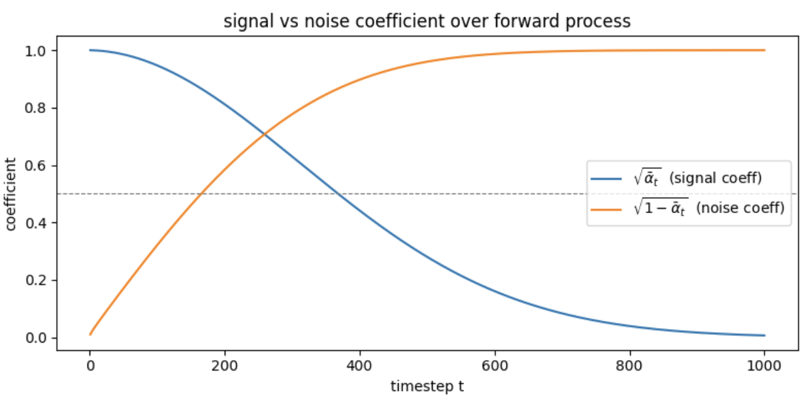
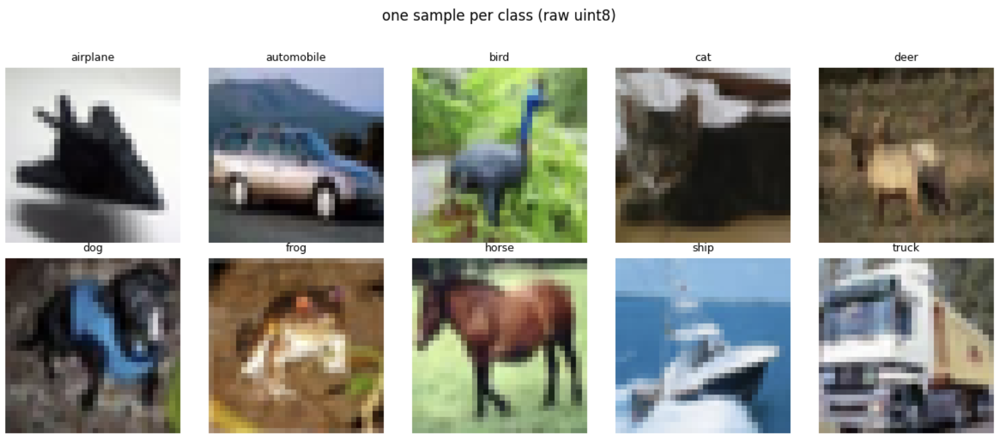
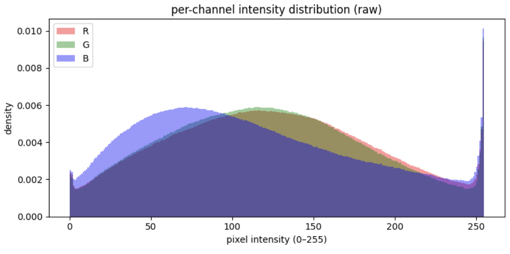
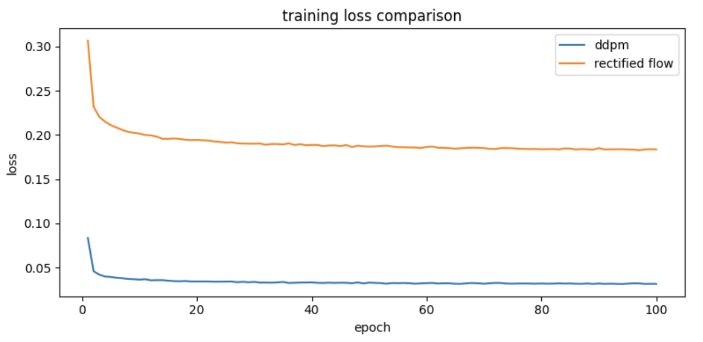
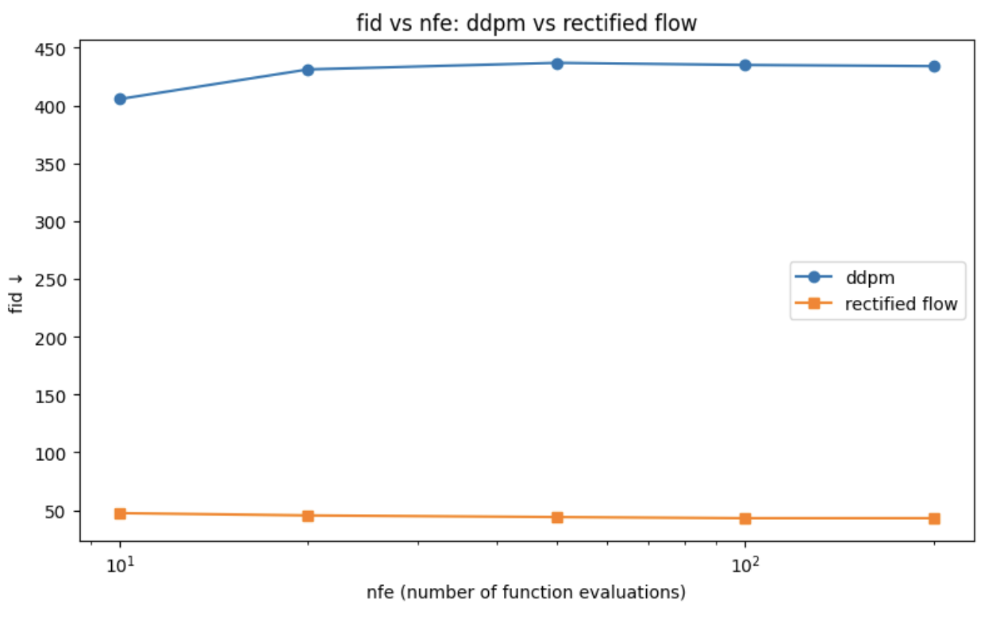

Score-Based Generative Model on a Real Dataset with OT-Guided Sampling
Score-Based Generative Modeling on CIFAR-10: DDPM vs Rectified Flow

Overview
This project implements two generative models from scratch on CIFAR-10: a Denoising Diffusion Probabilistic Model (DDPM) and a Rectified Flow model. Both are trained on the same U-Net architecture and benchmarked at equal NFE budgets using FID score. The project establishes the mathematical connection between DDPM denoising steps and the JKO proximal scheme in Wasserstein space, and demonstrates empirically that OT-guided straight trajectories (Rectified Flow) achieve significantly lower FID at low NFE than standard Gaussian diffusion.
Core implementations covered:
- DDPM forward process with linear \(\beta\) schedule and closed-form \(q(x_t \mid x_0)\) sampling
- Denoising score matching loss with noise prediction parameterization
- Time-conditioned U-Net with sinusoidal embeddings, GroupNorm, and skip connections
- DDPM full and strided reverse samplers
- Rectified Flow training objective with straight-line interpolation and Euler ODE sampler
- NFE vs FID benchmark across budgets \(\{10, 20, 50, 100, 200\}\)
- JKO / Wasserstein gradient flow framing as explicit notebook markdown
- Push-forward unification of both models under \(T_\sharp \mu = \nu\)
Intuitive Explanation
1. What is a Score Function?
Imagine you are lost in a hilly landscape in complete fog. You cannot see the peaks, but you can feel the ground slope beneath your feet. The score function is exactly this slope — at any point in space, it tells you which direction leads uphill toward higher probability (more likely images). Formally, the score is \(\nabla_x \log p(x)\): the gradient of the log-probability density at a point \(x\). A generative model that learns this gradient field can start from anywhere (pure noise) and hillclimb toward regions of high data probability, producing realistic images.
2. What is the Forward Diffusion Process?
Think of dropping a photograph into a bucket of water. At first the image is clear; gradually ink diffuses outward until the water is uniformly grey. The forward diffusion process does exactly this mathematically — it adds small amounts of Gaussian noise at each of \(T=1000\) steps until the image is indistinguishable from pure random noise. Crucially, this process has a closed form: you can jump directly from a clean image \(x_0\) to a noisy image \(x_t\) at any timestep without simulating every intermediate step. This is what makes training tractable.
3. DDPM as a Wasserstein Gradient Flow (the JKO Connection)
Standard intuition says the denoising network is just curve-fitting — learning to subtract noise from pixels. The JKO lens reveals something deeper. Each denoising step is a proximal minimization step in the space of probability distributions, moving the current distribution one step closer to the data distribution \(p_\text{data}\) while not straying too far from the previous distribution. The distance used is the Wasserstein-2 distance — the same Earth Mover’s Distance that measures the minimum transport cost between two distributions. Training is therefore not pixel-space regression; it is gradient descent on the Wasserstein manifold.
4. Why is Rectified Flow FASTER?
In DDPM, the path from noise to image curves significantly through high-dimensional space — like a river winding through a valley. A numerical solver must take small steps to stay on the curve, requiring hundreds to thousands of NFEs. Rectified Flow instead draws a straight line between each noise vector and its paired data point, training the network to move along this line at constant velocity. A straight path needs far fewer steps to traverse accurately — the same reason you need fewer compass checks walking in a straight line than navigating a winding road. This geometric simplification is the core reason Rectified Flow achieves competitive image quality at NFE=10 where DDPM completely collapses.
Mathematical Foundations
The Forward Process: Closed-Form Noising
Given a clean image \(x_0\), the forward process defines a sequence of increasingly noisy images. The one-step Markov transition is:
\[q(x_t \mid x_{t-1}) = \mathcal{N}\!\left(x_t;\, \sqrt{1-\beta_t}\, x_{t-1},\, \beta_t \mathbf{I}\right)\]
where \(\beta_t \in (0,1)\) is the noise schedule. Defining \(\alpha_t = 1 - \beta_t\) and \(\bar{\alpha}_t = \prod_{s=1}^{t} \alpha_s\), repeated application of the Gaussian convolution identity yields the closed form:
\[q(x_t \mid x_0) = \mathcal{N}\!\left(x_t;\, \sqrt{\bar{\alpha}_t}\, x_0,\, (1-\bar{\alpha}_t)\mathbf{I}\right)\]
which is sampled via the reparameterization:
\[x_t = \sqrt{\bar{\alpha}_t}\, x_0 + \sqrt{1-\bar{\alpha}_t}\, \varepsilon, \qquad \varepsilon \sim \mathcal{N}(0, \mathbf{I})\]
This is the key identity: \(x_t\) is a deterministic, differentiable function of \(x_0\) and \(\varepsilon\). No intermediate steps need to be simulated. With a linear schedule \(\beta_1 = 10^{-4}\) to \(\beta_T = 0.02\) over \(T=1000\) steps, signal collapses to noise after \(t \approx 260\) (signal/noise crossover).

Signal coefficient \(\sqrt{\bar{\alpha}_t}\) and noise coefficient \(\sqrt{1-\bar{\alpha}_t}\) as functions of timestep. They cross at \(t=260\), after which noise dominates.The Score Function and Denoising Objective
The score function of the forward process is:
\[\nabla_{x_t} \log q(x_t \mid x_0) = -\frac{x_t - \sqrt{\bar{\alpha}_t}\, x_0}{1 - \bar{\alpha}_t} = -\frac{\varepsilon}{\sqrt{1-\bar{\alpha}_t}}\]
where the second equality follows by substituting \(x_t - \sqrt{\bar{\alpha}_t} x_0 = \sqrt{1-\bar{\alpha}_t}\,\varepsilon\). A network \(\varepsilon_\theta(x_t, t)\) that predicts \(\varepsilon\) therefore estimates the score up to a timestep-dependent scaling factor \(-1/\sqrt{1-\bar{\alpha}_t}\). The training objective is:
\[\mathcal{L}_\text{DDPM} = \mathbb{E}_{t,\, x_0,\, \varepsilon}\!\left[\left\|\varepsilon_\theta(x_t, t) - \varepsilon\right\|^2\right]\]
where \(t \sim \mathcal{U}[1,T]\), \(x_0 \sim p_\text{data}\), \(\varepsilon \sim \mathcal{N}(0,\mathbf{I})\), and \(x_t\) is constructed via the closed form above.
The Reverse Process
The learned reverse transition is modeled as:
\[p_\theta(x_{t-1} \mid x_t) = \mathcal{N}\!\left(x_{t-1};\, \mu_\theta(x_t, t),\, \sigma_t^2 \mathbf{I}\right)\]
The mean is derived by substituting the estimated clean image \(\hat{x}_0 = \frac{1}{\sqrt{\bar{\alpha}_t}}\!\left(x_t - \sqrt{1-\bar{\alpha}_t}\,\varepsilon_\theta\right)\) into the true posterior mean \(\tilde{\mu}_t(x_t, x_0)\):
\[\mu_\theta(x_t, t) = \frac{1}{\sqrt{\alpha_t}}\!\left(x_t - \frac{\beta_t}{\sqrt{1-\bar{\alpha}_t}}\,\varepsilon_\theta(x_t, t)\right)\]
The variance \(\sigma_t^2 = \beta_t\) is fixed (not learned) — the upper bound of the posterior variance under an uninformative prior on \(x_0\).
The Rectified Flow Objective
Rectified Flow replaces the stochastic SDE with a deterministic ODE. Training pairs \(x_0 \sim p_\text{data}\) with \(x_1 \sim \mathcal{N}(0,\mathbf{I})\) and defines the straight-line interpolation:
\[x_t = (1-t)\,x_0 + t\,x_1, \qquad t \sim \mathcal{U}[0,1]\]
The velocity network \(v_\theta(x_t, t)\) is trained to match the constant target velocity:
\[\mathcal{L}_\text{RF} = \mathbb{E}_{x_0,\, x_1,\, t}\!\left[\left\|v_\theta(x_t, t) - (x_1 - x_0)\right\|^2\right]\]
At inference, samples are generated by integrating the learned ODE from \(t=1\) to \(t=0\):
\[\frac{dx}{dt} = v_\theta(x, t), \qquad x_1 \sim \mathcal{N}(0,\mathbf{I})\]
using Euler steps of size \(\Delta t = 1/N\) for \(N\) NFEs.
DDPM — Architecture and Training
Time-Conditioned U-Net
The score network \(\varepsilon_\theta(x_t, t)\) is a U-Net with sinusoidal timestep embeddings. The architecture must be conditioned on \(t\) because the same pixel values \(x_t\) require different denoising directions at different noise levels — a deterministic network receiving identical inputs must produce different outputs, which is impossible without \(t\).
Sinusoidal timestep embedding: Timestep \(t\) is encoded into a continuous vector via:
\[\text{emb}(t)_i = \begin{cases} \sin\!\left(t / 10000^{2i/d}\right) & i < d/2 \\ \cos\!\left(t / 10000^{2(i-d/2)/d}\right) & i \geq d/2 \end{cases}\]
This produces a unique, smooth representation for each noise level, injected additively into every residual block. Embeddings at different timesteps are nearly orthogonal (cosine similarity \(t=0\) vs \(t=499\): 0.0918), ensuring the network can distinguish noise levels.
Residual block structure: Each block applies:
\[h = \text{SiLU}(\text{GroupNorm}(\text{Conv}(x))) + \text{Linear}(t\_\text{emb})\] \[\text{out} = \text{SiLU}(\text{GroupNorm}(\text{Conv}(h))) + \text{skip}(x)\]
where the time embedding is injected additively after the first activation. GroupNorm over 8 groups is used instead of BatchNorm for stability at small batch sizes.
Full architecture:
| Stage | Channels | Spatial size |
|---|---|---|
| Input | 3 | 32×32 |
| Encoder block 1 | 64 | 32×32 |
| Encoder block 2 | 128 | 16×16 |
| Encoder block 3 | 256 | 8×8 |
| Bottleneck (×2) | 256 | 4×4 |
| Decoder block 3 | 128 | 8×8 |
| Decoder block 2 | 64 | 16×16 |
| Decoder block 1 | 64 | 32×32 |
| Output projection | 3 | 32×32 |
Skip connections concatenate encoder features into decoder inputs. Total: 5,053,763 parameters.
Training
The model was trained on CIFAR-10 (50,000 images, 10 balanced classes of 5,000 each) normalized to \([-1,1]\).

One sample per class from CIFAR-10. Images are 32×32 RGB.
Per-channel pixel intensity distribution. R mean=125.3, G mean=123.0, B mean=113.9. Normalization to \([-1,1]\) centers the data distribution at \(\approx -0.053\).Hyperparameters:
| Hyperparameter | Value |
|---|---|
| \(T\) (diffusion steps) | 1000 |
| \(\beta_\text{min}\) | \(10^{-4}\) |
| \(\beta_\text{max}\) | \(0.02\) |
| Batch size | 128 |
| Optimizer | AdamW |
| Learning rate | \(2 \times 10^{-4}\) |
| Epochs | 100 |
| Gradient clipping | 1.0 |
| Random seed | 42 |
Gradient clipping at norm 1.0 is essential: the score scaling factor \(1/\sqrt{1-\bar{\alpha}_t}\) reaches ~100 at \(t=1\), meaning low-timestep batches can produce large gradient magnitudes that destabilize training without clipping.
Final DDPM training loss: 0.0316
DDPM as a Wasserstein Gradient Flow
The JKO Scheme
The Jordan-Kinderlehrer-Otto (JKO) scheme is a time-discretization of gradient flow in the space of probability distributions. At each discrete step \(k\), the next distribution is defined by:
\[\rho_{k+1} = \arg\min_{\rho} \left[ \underbrace{\mathrm{KL}(\rho \,\|\, p_{\text{data}})}_{\text{functional to minimize}} + \underbrace{\frac{1}{2\tau} W_2^2(\rho,\, \rho_k)}_{\text{proximal regularizer}} \right]\]
The two terms balance competing objectives:
- \(\mathrm{KL}(\rho \| p_\text{data})\): pull the current distribution toward the data distribution.
- \(\frac{1}{2\tau} W_2^2(\rho, \rho_k)\): prevent the distribution from moving too far in one step, measured in Wasserstein-2 distance (minimum transport cost).
- \(\tau\): step size — corresponds to \(\beta_t\) in the DDPM noise schedule.
As \(\tau \to 0\) and \(T \to \infty\), the discrete JKO steps converge to the Fokker-Planck equation, whose drift term is exactly the score function \(\nabla_x \log p(x_t)\).
Connection to DDPM Denoising Steps
Each DDPM denoising step implements a JKO update in distribution space:
| JKO term | DDPM equivalent |
|---|---|
| \(\rho_k\) | noisy distribution \(q(x_t)\) |
| \(\rho_{k+1}\) | denoised distribution \(p_\theta(x_{t-1})\) |
| step size \(\tau\) | noise schedule parameter \(\beta_t\) |
| velocity field | score network \(\varepsilon_\theta(x_t, t)\) |
Reframing What Training Does
Viewed naively, minimizing \(\mathcal{L}_\text{DDPM} = \mathbb{E}\!\left[\|\varepsilon_\theta - \varepsilon\|^2\right]\) looks like pixel-space regression. The JKO framing reveals the correct interpretation:
Training is gradient descent in the space of probability distributions. The score network learns the velocity field of a Wasserstein gradient flow that transports \(\mathcal{N}(0,\mathbf{I})\) toward \(p_\text{data}\) along the direction of steepest descent of \(\mathrm{KL}(\cdot \| p_\text{data})\).
This reframing has a direct practical consequence: the step size \(\beta_t\) controls the proximal trade-off. Too large and the distribution jumps erratically; too small and convergence requires many NFEs. This is the mathematical reason DDPM needs \(T=1000\) steps — and why Rectified Flow, which finds straighter paths in distribution space, can do far better at low NFE.
Rectified Flow and the Push-Forward View
OT-Guided Straight Trajectories
Rectified Flow trains a velocity network \(v_\theta(x_t, t)\) on straight-line interpolations between data and noise:
\[x_t = (1-t)\,x_0 + t\,x_1, \qquad x_0 \sim p_\text{data},\quad x_1 \sim \mathcal{N}(0,\mathbf{I}),\quad t \sim \mathcal{U}[0,1]\]
This is displacement interpolation — the same geodesic interpolation from Wasserstein geometry. Under independent (random) coupling, trajectories can cross. Under the optimal transport coupling (Monge map), points are paired to minimize total transport cost, eliminating crossings and making the learned velocity field closer to constant. With independent coupling (used here), the network still learns approximately straight trajectories — sufficient to dramatically reduce NFEs.
The Push-Forward View
Both models solve the same fundamental problem:
\[T_\sharp\, \mu = \nu, \qquad \mu = \mathcal{N}(0,\mathbf{I}),\quad \nu = p_\text{data}\]
They differ only in how the transport map \(T\) is parameterized:
Rectified Flow — deterministic push-forward:
The ODE flow map \(\varphi_t\) integrates \(v_\theta\) from \(t=1\) to \(t=0\):
\[T(x) = \varphi_0(x) = x + \int_1^0 v_\theta(x_t, t)\, dt\]
The push-forward equation is:
\[(\varphi_0)_\sharp\, \mathcal{N}(0,\mathbf{I}) = p_\text{data}\]
\(v_\theta\) is the infinitesimal generator of \(T\) — the network predicts local velocity arrows whose path integral accumulates into the full transport map.
DDPM — stochastic push-forward:
\[T_\sharp\,\mu = (K_1 \circ K_2 \circ \cdots \circ K_T)_\sharp\, \mathcal{N}(0,\mathbf{I})\]
where each \(K_t\) samples from \(p_\theta(x_{t-1} \mid x_t)\). The transport is not a single deterministic map but a composition of \(T\) conditional Gaussians.
| Rectified Flow | DDPM | |
|---|---|---|
| Push-forward type | deterministic | stochastic |
| Transport map \(T\) | \(\varphi_0\) (ODE flow) | \(K_1 \circ \cdots \circ K_T\) (Markov chain) |
| Generator | \(v_\theta\) (velocity field) | \(\varepsilon_\theta\) (score predictor) |
| Path geometry | straight (≈ OT geodesic) | curved (variance-preserving SDE) |
| NFE to approximate \(T\) | low | high |
Training and Sampling
Both models use the identical U-Net architecture (5,053,763 parameters) trained for 100 epochs with AdamW at \(lr = 2\times10^{-4}\).
RF training loss: 0.1838 — not comparable to DDPM’s 0.0316. RF targets \((x_1 - x_0)\) with variance \(\approx 2\); DDPM targets \(\varepsilon\) with variance \(1\). Lower absolute loss does not mean better generative quality.
At inference, RF integrates the ODE using Euler steps:
\[x_{t - \Delta t} = x_t - v_\theta(x_t, t)\cdot \Delta t, \qquad \Delta t = \frac{1}{N}\]
for \(N\) steps from \(t=1\) to \(t=0\). Because trajectories are straight, large \(\Delta t\) (few steps) introduces minimal discretization error — unlike DDPM where large steps cause the sampler to fly off curved trajectories.
Results
Training Curves
Both models trained for 100 epochs on a Tesla P100-16GB GPU (~22s/epoch).

DDPM loss converges to 0.0316; RF loss converges to 0.1838. Losses operate on different scales and are not directly comparable — DDPM targets unit-variance noise, RF targets difference vectors with variance ≈ 2.NFE vs FID Benchmark
10,000 samples generated per model per NFE budget. FID computed against 10,000 real CIFAR-10 training images using Inception-v3 pool3 features (pytorch-fid). Real vs real FID baseline: 10.27.

FID vs NFE for DDPM and Rectified Flow. Lower is better. DDPM collapses at low NFE; RF remains stable across all budgets.| NFE | DDPM FID | RF FID | RF Advantage |
|---|---|---|---|
| 10 | 405.60 | 47.39 | +358.21 |
| 20 | 431.21 | 45.37 | +385.84 |
| 50 | 436.92 | 43.96 | +392.96 |
| 100 | 435.09 | 43.01 | +392.07 |
| 200 | 434.03 | 43.02 | +391.02 |
Interpretation
DDPM at NFE 10–200: FID 405–437 — effectively generating near-random noise. The strided sampler skips steps on curved trajectories, accumulating large discretization error. DDPM requires the full \(T=1000\) steps for valid sampling; anything less violates the mathematical assumptions of the reverse process.
RF at NFE 10–200: FID 43–47 — stable and consistent across all budgets. The straight-line trajectory tolerates large Euler steps without significant drift. The gap between NFE=10 (47.39) and NFE=200 (43.02) is only 4.37 FID points — diminishing returns set in quickly.
The core finding: Rectified Flow achieves competitive sample quality at NFE=10 where DDPM completely fails. The RF advantage exceeds 350 FID points at every tested budget. This directly validates the geometric argument: straight trajectories in distribution space require fewer discretization steps to approximate accurately.
Key Insights
1. DDPM’S CURVED TRAJECTORIES MAKE LOW-NFE SAMPLING MATHEMATICALLY INVALID
DDPM’s strided sampler does not merely degrade gracefully at low NFE — it collapses catastrophically (FID 405–437). This is not a tuning failure. The reverse process derives its correctness from the assumption that \(\beta_t\) is small enough that the reverse of the forward process is approximately Gaussian. Skipping steps violates this assumption entirely: the sampler attempts to jump across regions of distribution space where the score network was never trained to operate. Each skipped step compounds the error, and the trajectory flies off the curved path into regions of near-zero data probability. The mathematical contract of the reverse SDE is broken.
2. RECTIFIED FLOW’S STABILITY ACROSS NFE BUDGETS IS A GEOMETRIC PROPERTY, NOT A TUNING ARTIFACT
The 4.37 FID point gap between RF at NFE=10 (47.39) and NFE=200 (43.02) is remarkably small. This flatness is a direct consequence of straight trajectories — Euler integration error on a straight path scales as \(O(\Delta t)\) rather than \(O(\Delta t^{-1})\) for curved paths where curvature amplifies step error. The network is trained to predict a constant velocity vector \((x_1 - x_0)\); a large Euler step in a constant velocity field lands exactly where a small step would, up to first-order error. This is not an accident of training — it is the geometric payoff of the OT-guided straight-path design.
3. THE JKO LENS REVEALS WHY THESE TWO MODELS ARE NOT AS DIFFERENT AS THEY APPEAR
DDPM and Rectified Flow look like fundamentally different algorithms — one stochastic, one deterministic; one score-based, one flow-based. The push-forward framing unifies them: both learn a map \(T_\sharp \mu = \nu\) from \(\mathcal{N}(0,\mathbf{I})\) to \(p_\text{data}\). The difference is path geometry. DDPM parameterizes \(T\) as a composition of \(T=1000\) stochastic Markov kernels along a curved, variance-preserving SDE trajectory. Rectified Flow parameterizes \(T\) as a single ODE flow map along a straight trajectory. The JKO scheme makes this concrete: DDPM takes many small proximal steps in Wasserstein space; Rectified Flow takes fewer, larger steps because its straighter path requires less proximal regularization to remain stable. Both are gradient flows — one just flows along a more efficient route.
Implementation Notes
- No external generative model libraries. DDPM forward process, score matching loss, reverse sampler, and Rectified Flow training loop are all implemented from scratch in pure PyTorch. No diffusers, no flow matching libraries.
- U-Net written explicitly. Standard PyTorch primitives only (Conv2d, GroupNorm, SiLU). No imported model architectures.
- FID via pytorch-fid. Uses the standard Inception-v3 pool3 feature extractor — the community standard for CIFAR-10 comparisons. CIFAR-10 images upsampled 32→75px before Inception forward pass (minimum input size requirement).
- Gradient clipping at norm 1.0. Essential for DDPM training: the score scaling factor \(1/\sqrt{1-\bar{\alpha}_t}\) reaches ~100 at \(t=1\), producing large gradient magnitudes at low-noise timesteps without clipping.
- Images normalized to \([-1,1]\). Centering at zero aligns the data distribution mean with the terminal noise distribution \(\mathcal{N}(0,\mathbf{I})\), eliminating asymmetric bias in score estimates at intermediate timesteps.
- Fixed random seed 42 throughout for reproducibility.
- Shared architecture. Both DDPM and RF use the identical U-Net (5,053,763 parameters) for a controlled comparison — architectural differences cannot explain FID differences.
- JKO and push-forward framing documented as explicit markdown cells in the notebook, not comments.
Dependencies
torch==2.3.1
torchvision==0.18.1
numpy==2.4.6
matplotlib==3.10.0
pytorch-fid # fid computation via inception-v3 pool3 features
scipy # matrix square root for frechet distance
tqdm # training and sampling progress bars
INSTALL COMMANDS [Kaggle Notebook \(\rightarrow\) Add-ons \(\rightarrow\) Install Dependencies]
pip install torch==2.3.1+cu121 torchvision==0.18.1+cu121 \
--index-url https://download.pytorch.org/whl/cu121
pip install torch-geometric==2.5.3
pip install pyg_lib==0.4.0 torch_scatter==2.1.2 \
torch_sparse==0.6.18 torch_cluster==1.6.3 \
-f https://data.pyg.org/whl/torch-2.3.0+cu121.htmlNote
| The notebook was developed and tested on a Kaggle environment with a NVIDIA P100 16GB GPU, Python 3.12, and CUDA 12.1. All cells run end-to-end from a clean kernel without any external dependencies beyond those listed above. |
|---|